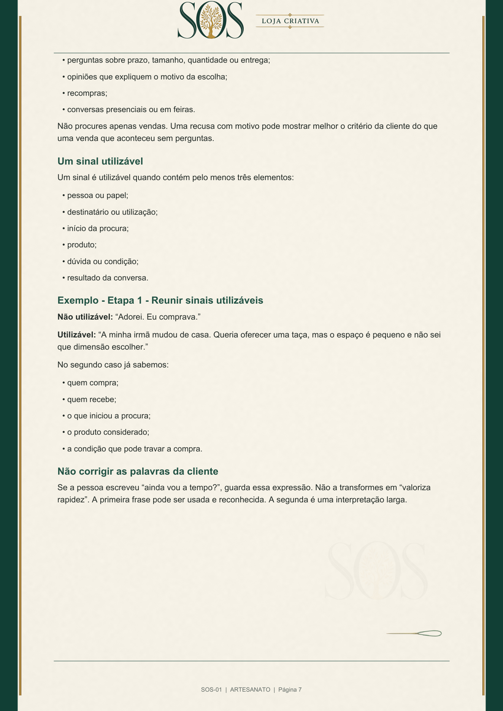
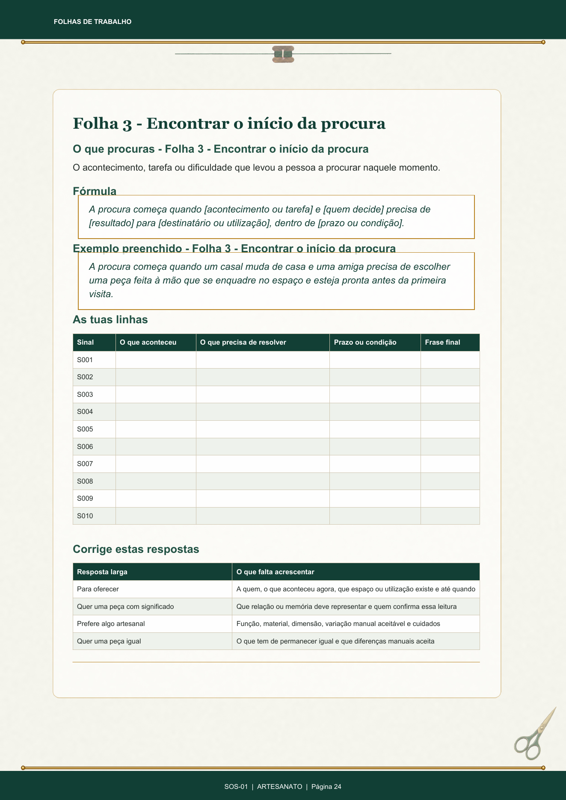

1 tema · 1 PDF
Plano individual
14,90 €
Para trabalhares uma prioridade de cada vez.
Por exemplo: reunir os custos e rever o preço de uma venda.
Planos práticos em PDF para lojas criativas
Publicas, respondes a pedidos de preço, mas as encomendas não avançam? O diagnóstico gratuito ajuda-te a escolher o que trabalhar primeiro.
Depois, se fizer sentido para ti, tens um Plano SOS com exemplos e folhas de trabalho do teu ramo. Um plano, 14,90 €. Pagamento único. Ver preços e condições
30 perguntas. Uma primeira ação útil. Podes guardar o resultado sem comprar.
Com o Diagnóstico SOS vais:
Quando tudo parece urgente
Podes estar a publicar e não receber perguntas. Receber perguntas e perder a venda quando dizes o preço. Ter bons produtos, mas mostrar tantos que ninguém percebe por onde começar. Ou trabalhar todos os dias sem saber o que trouxe a última encomenda.
Estes problemas não se resolvem todos da mesma forma. O primeiro passo é separar o sintoma do bloqueio que o está a provocar.
O que existe dentro de um Plano SOS
No SOS-01, por exemplo, vais organizar quem compra, para quem é o produto e o que faz a procura começar. Estas duas páginas reais mostram a explicação e uma folha de trabalho da versão Artesanato.


O problema é explicado com situações de compra do ramo, não com definições soltas.
Vês uma decisão completa antes de teres de construir a tua.
Organizas perguntas, encomendas, recusas e dados da loja pela ordem necessária para decidir.
Terminas com critérios concretos para verificar se o trabalho ficou utilizável ou se ainda está vago.
Escolher com contexto
Respondes a 30 perguntas com base nos últimos 90 dias da loja. Recebes a pontuação total, a prioridade a trabalhar e a indicação do Plano SOS que trabalha esse problema.
Usas os últimos 90 dias da loja. Uma intenção ainda não aplicada não recebe a mesma pontuação de algo que já foi testado.
Vês a pontuação total, as áreas mais frágeis e a prioridade que merece trabalho antes das restantes.
Não tens de escolher entre dez títulos. O resultado liga o problema ao plano e à versão preparada para o teu ramo.
Podes guardar o resultado sem comprar. As respostas ficam neste dispositivo para continuares mais tarde.
O mesmo problema muda de ramo para ramo
Uma prova de confiança numa pastelaria criativa não é tratada como numa loja de ficheiros digitais. Um prazo de casamento não é explicado como uma reposição de materiais. O método mantém-se; as decisões, exemplos e folhas mudam.
As imagens são ilustrativas e mostram materiais, ferramentas ou processos de cada ramo. Não representam encomendas reais da SOS Loja Criativa nem resultados de clientes.

Personalizados e presentes à medida
Os exemplos ajudam a separar quem compra de quem recebe, a recolher pedidos reais e a perceber em que ocasião a personalização passa de “bonita” a necessária.
Exemplo trabalhado: uma caneca procurada para oferecer a uma professora, com data limite, mensagem escolhida e receio de não chegar a tempo.
Dez problemas separados para não repetir conteúdo
Podes comprar um único plano. Escolhe uma capa para veres o problema tratado, o trabalho incluído e o resultado que ficará registado. As capas mostram Personalizados como exemplo; cada plano existe nos sete ramos.
SOS-01
Inclui uma versão própria para Personalizados, Artesanato, Moda, Papelaria, Eventos, Pastelaria e Materiais.
A loja não distingue quem faz a encomenda de quem vai receber ou utilizar o produto.
Usas perguntas, encomendas e situações reais para separar compradora, destinatária e motivo de compra.
Uma leitura concreta de quem compra e das situações que fazem a procura começar.
Recebes SOS-01 · Personalizados · 1 PDF. 14,90 €, com IVA de 6% em Portugal Continental. Total confirmado antes do pagamento.
Ainda tenho dúvidas — fazer o diagnóstico gratuitoTransparência antes da compra
A tua parte
Vais procurar sinais dos últimos 90 dias, preencher as folhas com informação da tua loja, tomar decisões, aplicar uma alteração e registar o que aconteceu. Sem esses dados, o ficheiro continua a ser um modelo por preencher.
O preço é o mesmo, qualquer que seja o plano recomendado
Todos os temas têm o mesmo preço. Assim, o Diagnóstico pode recomendar aquilo de que a loja precisa, sem empurrar a opção mais cara.
O valor inclui o método completo de um problema, as folhas de trabalho, um caso preenchido do ramo e os critérios usados para confirmar a aplicação.
Plano individual
14,90 €
Um tema, uma versão por ramo e o trabalho completo desse problema.
O diagnóstico é gratuito e não obriga a comprar. Já sei o que preciso — escolher um planoQuatro formas de escolher
Escolhe pelos temas de que precisas e pelo tempo que tens para os aplicar. Em todas as modalidades, recebes os mesmos Planos SOS completos, na versão do teu ramo.
1 tema · 1 PDF
14,90 €
Para trabalhares uma prioridade de cada vez.
Por exemplo: reunir os custos e rever o preço de uma venda.
2 temas · 2 PDFs
24,90 €
Para dois trabalhos que queres ligar e aplicar por ordem.
Por exemplo: escolher a oferta principal e depois rever o preço.
3 temas · 3 PDFs
34,90 €
Para três áreas identificadas, com espaço para as trabalhar por etapas.
Por exemplo: oferta, preço e forma de encomendar.
10 temas · 10 PDFs
79,90 €
Para teres a coleção do teu ramo e a usares ao teu ritmo.
Do cliente e da oferta até ao acompanhamento e às campanhas.
Pagamento único · Um ramo por compra · Planos diferentes nos packs.
Os exemplos ajudam a comparar. És tu que escolhes os temas do pack na página seguinte.
Se começares por um plano e, nos 30 dias seguintes, escolheres um pack que o inclua, o valor elegível já pago é descontado.
Preços para Portugal Continental, com IVA de 6% incluído. O total final é confirmado antes do pagamento.
Quem está por trás da SOS
A SOS Loja Criativa é o projeto de Cátia Mendes. Cada plano trabalha uma área da loja e apresenta explicações, um caso preenchido e folhas para aplicares ao teu ramo.
Podes ver páginas reais antes de decidir. Se tiveres dúvidas sobre o produto ou a compra, escreve para apoio@soslojacriativa.pt.
Antes de começares
É um ficheiro PDF A4 de leitura e trabalho. Tem explicação, mas não foi feito apenas para guardar: lês uma parte, aplicas à tua loja, completas as folhas e confirmas o resultado antes de avançar.
Não. O Diagnóstico identifica a prioridade e recomenda um plano. Podes comprar apenas esse, trabalhar e voltar a avaliar a loja mais tarde.
Recebes estruturas, critérios e exemplos preenchidos. Não seria honesto entregar a mesma frase a lojas com produtos, clientes, prazos e formas de venda diferentes.
Existem versões próprias para Personalizados, Artesanato, Moda, Papelaria, Eventos, Pastelaria e Materiais. O ramo é escolhido antes das 30 perguntas.
Não. Mostra onde a estrutura está fraca e dá uma direção fundamentada. As vendas dependem do produto, da procura, da execução e das decisões que tomares depois.
Se tiveres a qualidade legal de consumidora, ao pedires o fornecimento imediato e reconheceres a perda do direito de livre resolução, esse direito termina quando a ligação protegida te é disponibilizada, sem depender de a abrires ou descarregares o ficheiro. Manténs os direitos aplicáveis em caso de falta de entrega, cobrança indevida ou falta de conformidade.
Sim. O resultado é teu. Só compras se quiseres trabalhar essa prioridade com um método já organizado para o teu ramo.
Depois da confirmação do pagamento, recebes por email uma ligação válida durante 30 dias. Podes concluir até cinco descargas por ficheiro; o PDF que guardares no teu dispositivo não expira.
O apoio trata dúvidas sobre pagamento, faturação, acesso, ligação, descarga, ficheiro, plano, ramo ou licença. Não inclui consultoria, preenchimento das folhas nem execução do método pela SOS Loja Criativa.